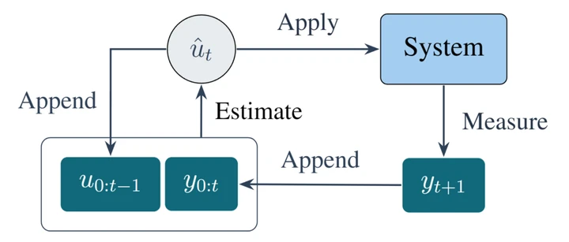

Indian Control Conference (ICC 2027)
Sep 2026
LQG solution for POMDP without estimating states: A minimum variance approach
Ranjan Sarkar, Prabhat K. Mishra
This work presents a minimum variance perspective to solve LQG-style POMDP problems without explicit state estimation.